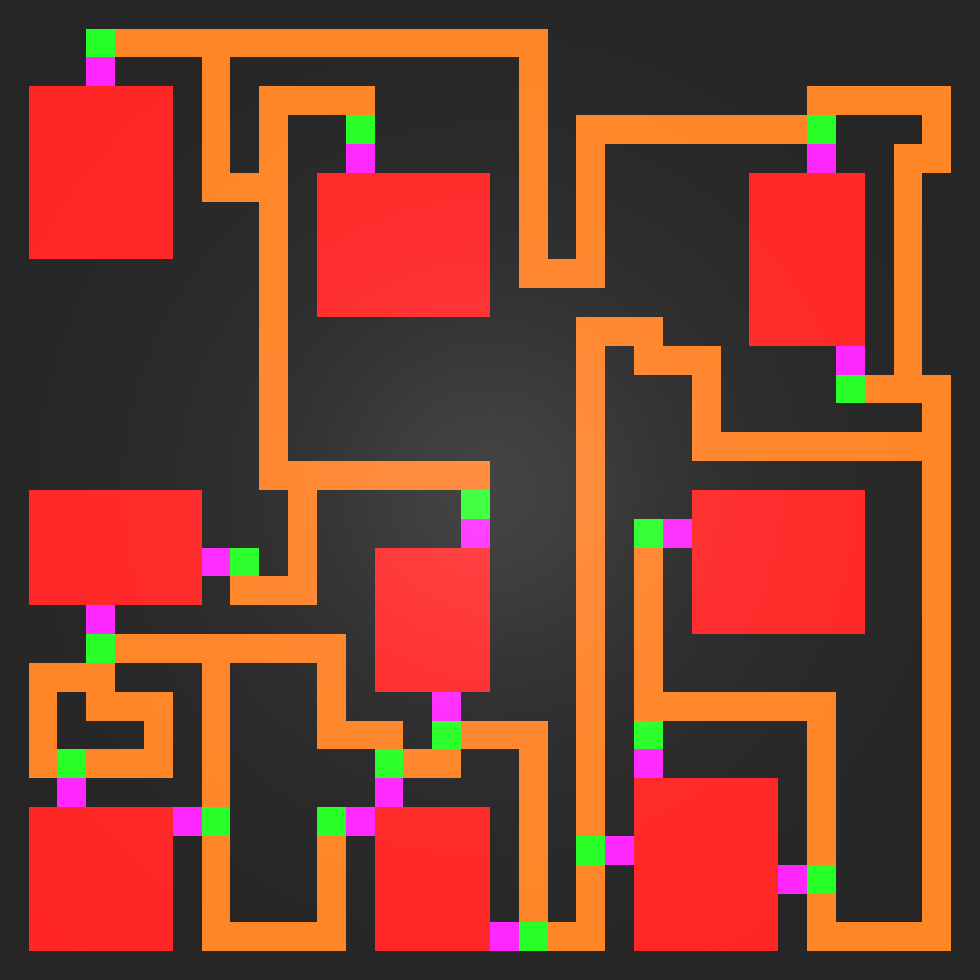
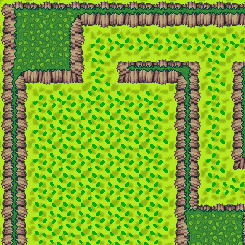

Mystery Dungeon is an ongoing project, developed solo on Unity. The goal of the game is to climb the various floors of a dungeon.
These floors are actually randomly generated 2D maps, composed of rooms which are linked by hallways.
The challenges faced in this project are the random generation of consistent maps, the implementation of an enemy AI and the conception of a combat system.

At the moment, a functional random map generator has been created.
Efforts have been made so that hallways are easy to move through (little zigzag), rooms are linked at least once to the hallway network,
map generation parameters (map size, room size, room padding, ...) are accessible, which allows for complety different floor designs.

Furthermore, a TileMap was implemented.
The TileMap uses a reference image that containes all the different textures we can find in the dungeon.
By cutting this image, we apply the textures on each square of the map automatically. Each square decides what texture to use according
to its surroundings.
The TileMap is a perfect match with randomly generated maps.
The next steps for this project are the creation of nicer textures with more precise themes (lava, forest, water, ...), the conception of a combat system and finally the implementation of an enemy AI.
Virtual try-on is a collection of technologies that makes people able to try on clothes,
accessories or to use a product by projecting it through an AR interface.
Created solo on Unity, Virtual Try-On corresponds to the main project of my end-of-studies internship.
The aim was to port glasses virtual try-on from a web version to a Unity one.

This try-on is mainly composed of a frame research in a databse, the dynamic creation of researched frame, and facial recognition that allows to position the glasses.
This project helped me familiarize with several technologies,
like the way shaders work, augmented reality, the dynamic creation of 3D models, web request from Unity, C# Events, Unity packages, Android builds and many more.
RhythmShapes is a last-year-of-studies project, which results from the collaboration of 5 students through the 2022/2023 school year.
Its main assets are a musical analysis AI capable of creating levels and an editor for players to modify levels.

The idea of this project, for which I was originally responsible, was to mix shapes and colours in a neon fashion to create a rhythm game.
It's from that idea that the map was created: shapes coming out of the center following particular paths depending on their colour.
More than the project itself, it is the experience of working in group that I want to put forward.
This project was based on the agile method, with regular mettings with the supervisor to follow up on the work done, talk about issues encountered and
objectives left.
On top of that, there were weekly team meeting to assigns tasks, bug report and find solutions to these bugs.
At the end, we obtained a game that satisfied our expectations.
If you want, you can try it on this page.